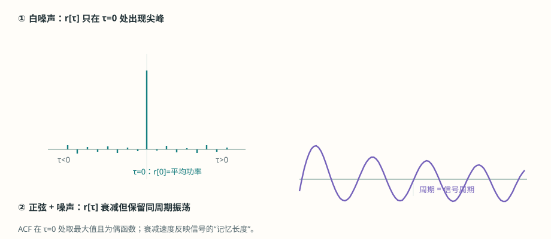
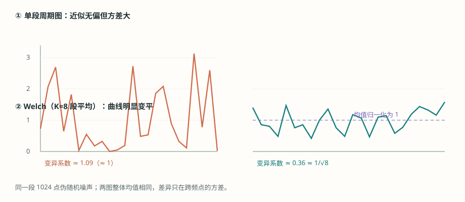

Signal · System · Insight / 14
统计信号处理：描述随机性，而不是预测每一个样本
用均值、相关函数与功率谱密度刻画随机信号，并说明为什么 PSD 估计总是分辨率与方差的折中。
当公式失效时，我们还能描述什么？
对一个确定信号 ，你可以精确算出任意时刻的值。但一段麦克风录下的环境噪声、一个无线信道的衰落、一段心电图、雷达接收机的噪声基底，都不存在这种公式。
对这类信号，我们不再问“下一时刻的值是多少”，而是问“它平均多大”“不同时刻之间有多相关”“能量分布在哪些频率”。要做到这些，需要先把信号从“一个函数”重新理解为“一个随机过程的一次实现”，再用统计量去描述它。
本章只做一件事：建立描述随机信号的几组基本工具，并把“如何从一段有限数据估计功率谱”讲清楚——这是接下来自适应滤波与谱估计章节的共同基础。
平稳性与各态历经
离散时间随机过程 是一族随机变量（每个时刻一个），实际测量得到的是其中的一条样本函数（realization）。要在只有一条样本函数时做估计，需要两个假设。
宽平稳（WSS）：均值是常数，自相关只依赖于时间差：
式（1）：宽平稳只要求一阶与二阶统计量不随时间平移而变。
各态历经（ergodic）：时间平均等于集合平均。于是在一条足够长的记录上做时间平均，就能估计集合平均：
式（2）：各态历经是“可以用一段数据做统计估计”的前提。
注意平稳不等同于各态历经：一个固定实现的直流电平加上随机初相的正弦，若相位分布不是均匀的，时间平均与集合平均就不相等。工程上很少严格证明各态历经，通常把它当作工作假设，再用分段一致性（把记录分成两半分别估计统计量）来检验它是否合理。
自相关与互相关
自相关函数（ACF）衡量信号与自身在不同延迟下的相似度。对宽平稳过程：
式（3）：τ 为延迟（整数样本）。
实信号的 ACF 有三条可直接用到的性质：它是偶函数 ；在 τ=0 处取最大且等于平均功率；若不含周期成分且均值为零，则 |τ|→∞ 时趋于零。
互相关衡量两个信号之间的关系：
式（4）：注意 r_xy 一般不等于 r_yx，也不一为偶函数。

互相关的典型应用包括：时延估计（雷达/声纳回波峰值位置对应距离）、系统辨识（用白噪激励时输出与输入的互相关给出冲激响应估计）、以及通信帧同步（用前导序列做匹配相关）。
功率谱密度与 Wiener-Khinchin
随机信号通常总能量无限，无法做 DTFT，于是改用功率谱密度（PSD）描述单位频率上的功率分布。Wiener-Khinchin 定理说：宽平稳过程的 PSD 与自相关函数互为 DTFT 对：
式（5）：ω 为数字角频率（rad/sample），S_xx 以 2π 为周期。
式（6）：τ=0 时右端就是平均功率 ∫S_xx dω/(2π)。
对实信号，PSD 是实、非负、偶函数。白噪声是其中最简单的一个：PSD 在全频带上平坦（常数 σ²），自相关只在 τ=0 处非零——两者正是 Wiener-Khinchin 对。白噪声是理想模型，真实电子器件的噪声多在中低频表现为 1/f 形状，需要用有色噪声模型描述。
周期图与 Welch：偏差-方差折中
最直接的 PSD 估计是周期图：把一段 N 点数据的离散傅里叶变换取模平方除以 N。
式（7）：对实信号，周期图以 2π 为周期且在 ω 与 2π−ω 对称。
周期图的均值近似等于真实 PSD（近似无偏），但它是一个不一致估计：对白噪声，单个频率 Bin 上的周期图服从指数分布，其标准差与均值同量级，且增加 N 只提高频率采样密度，不降低每个频率点上的方差。
Welch 法把长记录分成 K 段（可重叠），每段加窗后计算周期图，再对 K 个估计取平均。当各段近似独立时，方差降到单段的约 1/K；代价是每段长度变短，频率分辨率下降。这就是 PSD 估计永恒的分辨率—方差折中。

import random
random.seed(0) # 固定种子，结果可复现
K, nbins = 8, 256
segs = [[random.expovariate(1.0) for _ in range(nbins)] for _ in range(K)]
avg = [sum(s[i] for s in segs) / K for i in range(nbins)]
std = (sum((v - 1) ** 2 for v in avg) / len(avg)) ** 0.5
print(round(std, 3), "≈ 1/sqrt(K) =", round(K ** -0.5, 3))完整可运行测试（14_statistics.py）用标准库验证了：自相关为偶函数且 r[0] 等于平均功率；Wiener-Khinchin 在有限长数据上的离散形式；以及分段平均确实降低估计的变异系数。
交互：分段数如何降低方差
可交互实验：分段数如何降低 PSD 方差
固定一段确定性伪随机噪声（线性同余序列）；赭色为单段周期图，青色为 K 段平均。平均值均归一化为 1。
统计方法的边界
- 宽平稳只约束一阶、二阶矩，不保证严格平稳；相关函数不能描述所有非高斯结构。
- 各态历经是假设而非普适性质；用一段数据做估计前应做分段一致性检查。
- 周期图近似无偏但不一致：增加 N 不会降低单频点方差。
- Welch 的 1/K 方差下降依赖段间近似独立；重叠过多会降低有效段数。
- 窗函数会引入偏差（主瓣展宽），选择分段长度就是选择分辨率和方差的交易点。
自检：如果一段噪声的 ACF 在 τ=0 处为 4、其余几乎为零，它的平均功率和 PSD 大致是什么形状？若 ACF 在 τ 处出现周期性振荡，应优先怀疑什么？
参考资料与接口
- MIT OCW · Discrete-Time Signal Processing：宽平稳、自相关与 Wiener-Khinchin 定理。
- SciPy · periodogram：单段周期图估计接口。
- SciPy · welch：加窗分段平均的 PSD 估计接口。